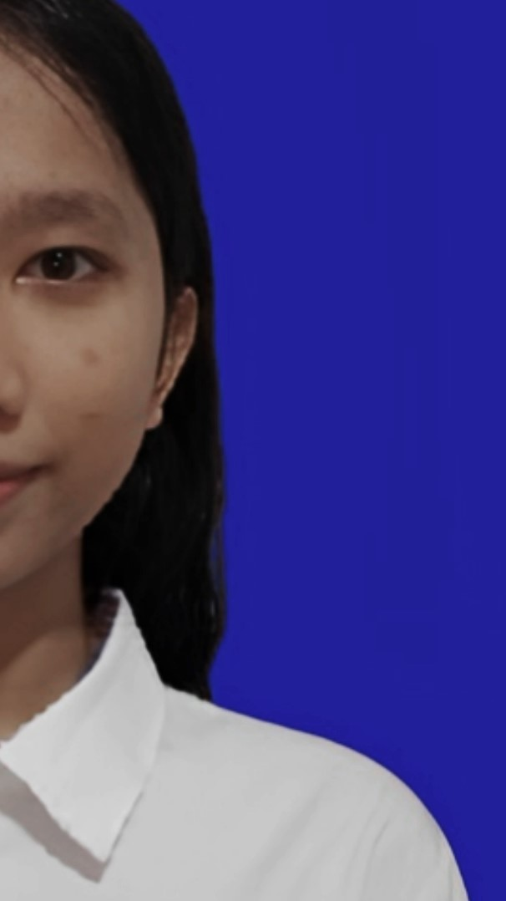

| Nama | : | Zestriani Zefanya Zein Siahaan |
| Tempat, Tanggal Lahir | : | Medan, 11 April 2008 |
| Alamat | : | Komplek Bougenvile Indah |
| Jenis Kelamin | : | Perempuan |
| Kewarganegaraan | : | Indonesia |
| Status | : | Mahasiswa |
| Program Studi | : | Teknik Rekayasa Perangkat Lunak |
| Hobi | : | Menari, Membaca, Menggibah, Makan, Tidur |
About My Website 📝

Hello, everyone! Let me introduce myself. My name is Zestriani Zefanya Zein Siahaan, but you can call me Zefanya. I am eighteen years old. I graduated from SMKN 1 Kutalimbaru, majoring in Software Engineering. During high school, I learned various things in technology and programming, such as web development, basic coding, system design, and application development. Currently, I am a freshman at Politeknik Negeri Medan, majoring in Software Engineering Technology. I feel proud and grateful to pursue my studies in a field I am passionate about. Since my school days, I have been deeply interested in the world of technology, specifically software development and digital innovation. In this digital era, I hope to continuously improve my skills in information technology to become a professional who can contribute meaningfully to society.
Contact Me 📞
Halo! Terima kasih banyak sudah berkunjung ke website saya. Jika Anda tertarik untuk berkolaborasi, memiliki pertanyaan seputar rekayasa perangkat lunak, atau hanya ingin berkenalan dan menyapa, silakan hubungi saya melalui platform di bawah ini. Saya akan sangat senang bisa terhubung dengan Anda!
Email: zestrianisiahaanpplg2@gmail.com
Instagram: @call_zefanyaaaa
YouTube: Chanel Zezes
Sampai jumpa di ruang obrolan!